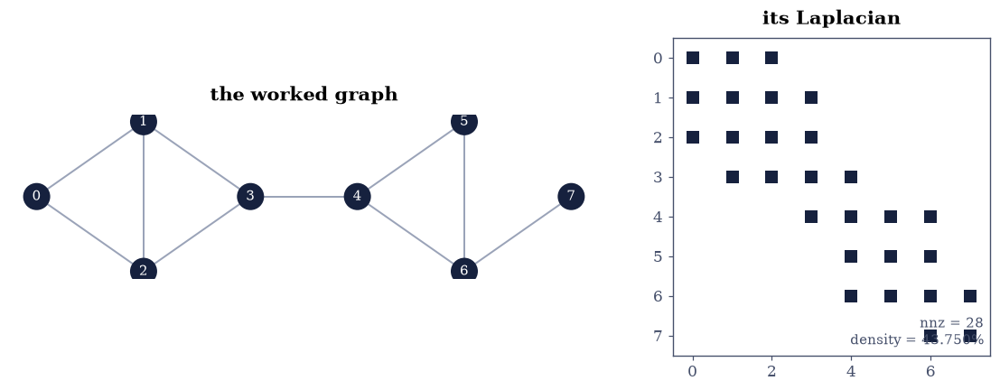
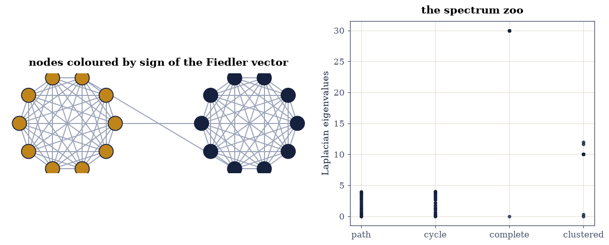

6.1 Graphs, Incidence Matrices, and the Laplacian#
Notebook overview#
Chapter V computed with matrices whose structure came from a grid. Chapter VI widens the lens: structure of any shape, starting with the most general discrete structure there is — a graph. The dictionary is exact. Build the incidence matrix \(B\) (one row per edge, \(-1\) and \(+1\) marking its ends) and the graph’s whole anatomy becomes linear algebra: the Laplacian \(L = B^{\top}B = D - A\) (an equality of integer matrices, gated exactly), its null space spanned by the indicator vectors of connected components, its second eigenvalue — Fiedler’s algebraic connectivity [Fie73] — measuring how hard the graph is to cut, and the sign pattern of the matching eigenvector performing the cut: spectral bisection recovers a planted two-cluster structure exactly, with a 29-fold spectral gap certifying the verdict.
The closing exercises are the classical theorems, checked against brute force and physics. The matrix-tree theorem says one cofactor of \(L\) counts spanning trees; this notebook counts all 24 of the worked graph’s trees by exhaustive enumeration and matches the determinant integer for integer. And the electrical reading — edges as unit resistors — makes \(L^{+}\) compute effective resistance, verified against the series and parallel rules every physics course teaches, plus Foster’s theorem (the resistances over edges sum to exactly \(n - 1\)), plus Kirchhoff’s two laws landing on the four fundamental subspaces of \(B\): currents balance because \(B^{\top}\) says so, voltages close around loops because the cycle space is \(B^{\top}\)’s null space. §1.4’s abstract picture, with electrons in it.
How to read a check. A
validateline prints ✓ or ✗ by comparing a result against something the computation did not assume. A ✗ flags a mismatch to investigate, never a verdict on its own.
Theory in brief#
The incidence matrix and the Laplacian#
Orient each of the \(m\) edges arbitrarily; the incidence matrix \(B \in \mathbb{R}^{m\times n}\) has \(B_{e,i} = -1\), \(B_{e,j} = +1\) for edge \(e = (i, j)\). Then, with \(D\) the diagonal of degrees and \(A\) the adjacency matrix,
an identity of integer matrices (the orientation cancels in the Gram product) and an explicit certificate that \(L\) is positive semidefinite. The quadratic form says everything: \(Lx = 0\) iff \(x\) is constant on every connected component, so
and the eigenvalue \(0\) has the component indicators as its eigenspace.
Fiedler’s eigenvalue, and cutting graphs#
For a connected graph the second-smallest eigenvalue \(\lambda_2 > 0\) — the algebraic connectivity — and its eigenvector \(v_2\) minimizes the edge quadratic \(\sum (x_i - x_j)^2\) among unit vectors orthogonal to the constant. A graph that is two dense clusters joined by a few edges can make this quadratic tiny by putting one cluster at \(+\) and the other at \(-\): the sign pattern of \(v_2\) is the cut. On a path graph the same minimization gives the smoothest non-constant profile — a discrete cosine, \(v_2(i) \propto \cos\bigl(\pi(i + \tfrac12)/n\bigr)\), with eigenvalues \(2 - 2\cos(k\pi/n)\): §5.3’s Poisson spectrum, rediscovered as graph theory.
Trees and resistors#
Two classical theorems close the loop. The matrix-tree theorem: delete any one row and column of \(L\); the determinant of what remains counts the spanning trees. And the electrical network: edges as unit resistors, a current injected at \(i\) and drawn at \(j\), potentials \(x = L^{+}(e_i - e_j)\), and
(Foster’s theorem — the sum over edges is an integer, whatever the graph). Kirchhoff’s current law is \(B^{\top}y = f\) (flows balance at nodes); the voltage law is \(y \perp \operatorname{null}(B^{\top})\) (drops cancel around cycles) — the four subspaces of §1.4, carrying current.
Setup#
Data and instruments only: the worked graph’s edges and layout, and a matplotlib graph-drawing helper. The incidence matrix and Laplacian — the notebook’s dictionary — are built in Exercise 1.
The Setup below holds this notebook’s data and instruments — nothing you are asked to build. It is collapsed so the building stays yours; expand it whenever you want the details.
Exercise 1: The dictionary: \(L = B^{\top}B = D - A\), exactly#
Eq. 248 is an identity of integer matrices, and integer arithmetic below \(2^{53}\) is exact in floating point — so for once the course’s no-exact-comparison rule steps aside, deliberately.
Part a) Write incidence(edges, n) — one row per edge, \(-1\) at the
tail, \(+1\) at the head — and with it build the incidence matrix of the worked
graph and print it: 10 rows (edges), 8 columns (nodes), each row one \(-1\)
and one \(+1\).
Part b) Form \(L = B^{\top}B\), the degree matrix \(D\) (diagonal of row
sums of the adjacency matrix), and \(A\) itself. Gate
np.array_equal(L, D - A) — exactly, because every entry is a small
integer and the Gram product cancels the arbitrary edge orientations.
Part c) Certify positive semidefiniteness twice: by the identity
\(x^{\top}Lx = \sum_{(i,j)}(x_i - x_j)^2\) evaluated on 100 random vectors
(never negative), and by np.linalg.eigvalsh (\(\lambda_{\min}\) within
\(100\,\varepsilon\lVert L\rVert\) of zero — the constant vector is in the
null space, so \(0\) is an eigenvalue).
Part d) Draw the graph beside la.sparsity_pattern of \(L\): the
pattern is the adjacency structure plus the diagonal, which is the entire
point — the Laplacian is the graph.
incidence matrix B (edges x nodes):
[[-1 1 0 0 0 0 0 0]
[-1 0 1 0 0 0 0 0]
[ 0 -1 1 0 0 0 0 0]
[ 0 -1 0 1 0 0 0 0]
[ 0 0 -1 1 0 0 0 0]
[ 0 0 0 -1 1 0 0 0]
[ 0 0 0 0 -1 1 0 0]
[ 0 0 0 0 -1 0 1 0]
[ 0 0 0 0 0 -1 1 0]
[ 0 0 0 0 0 0 -1 1]]
L == B'B == D - A exactly: True
degrees: [2 3 3 3 3 2 3 1]
x'Lx vs sum of squared edge differences: 2.1e-14
spectrum: [-0. 0.2786 1.1116 2.3154 3.4664 4. 4. 4.828 ]

Fig. 110 The worked graph and its Laplacian. Left: 8 nodes and 10 edges – two triangles sharing an edge on the left, a diamond on the right, one pendant node (7). Right: the sparsity pattern of \(L\) – the diagonal carries the degrees, the off-diagonal \(-1\)s are exactly the adjacency structure. The matrix does not encode the graph; it IS the graph, and every theorem in this notebook is a fact about this one picture read through Eq. 1.#
Validation 1#
✓ L = B'B = D - A as an exact identity of integer matrices (Eq. 1) [small integers are exactly representable and the Gram product cancels the arbitrary orientations — the legitimate exact comparison]
✓ and x'Lx is the sum of squared edge differences: psd by identity [the quadratic form certificate on 100 random vectors — nonnegativity needs no eigenvalue computation at all]
✓ with lambda_1 = 0 to eigvalsh accuracy [the constant vector is in the null space by Eq. 1; the tolerance is scaled by the matrix, per the course's rules [7.58074e-16 < 1.07203e-13]]
True
Exercise 2: The null space counts components#
Eq. 249 turns a topology question into a rank computation.
Part a) For the (connected) worked graph, confirm the zero eigenvalue is simple: exactly one eigenvalue below \(10^{-8}\), the rest above the algebraic connectivity \(\lambda_2 = 0.24\) — the counting is robust because the spectral gap is \(O(1)\), not because the arithmetic is exact.
Part b) Now break it deliberately: delete edges \((3,4)\) and \((6,7)\), leaving three components \(\{0,1,2,3\}\), \(\{4,5,6\}\), \(\{7\}\). Gate exactly three eigenvalues below \(10^{-8}\), with the fourth at \(O(1)\).
Part c) Confirm the eigenspace is the indicator space: for each component \(C\), the indicator vector \(\mathbf{1}_C\) satisfies \(\lVert L\,\mathbf{1}_C\rVert = 0\) exactly (integer arithmetic — each row of \(L\mathbf{1}_C\) sums integers that cancel).
Part d) Confirm the rank bookkeeping: np.linalg.matrix_rank of the
broken graph’s \(L\) is \(n - 3 = 5\), and of its incidence matrix likewise —
rank is the number of nodes minus the number of components, for any graph.
connected graph: 1 zero eigenvalue(s), lambda_2 = 0.2786
after cutting (3,4) and (6,7): 3 zero eigenvalues, fourth eigenvalue 2.0000
L times each component indicator is exactly zero: True
rank(L_cut) = 5, rank(B_cut) = 5 (n - c = 5)
Validation 2#
✓ the multiplicity of eigenvalue zero counts connected components (Eq. 2) [1 for the connected graph, 3 after two edges are cut — the count is robust because the spectral gap to the first nonzero eigenvalue is O(1), a property of the graph, not of the arithmetic]
✓ with the component indicators exactly in the null space [each row of L times an indicator sums integers that cancel — exact zero, legitimately]
✓ and rank(L) = rank(B) = n minus the component count [the null space of Eq. 2 seen from the rank side, for both the Laplacian and the incidence matrix]
True
Exercise 3: A zoo of spectra, and the Poisson matrix in disguise#
Whole families of graphs have closed-form spectra, and one of them is an old friend.
Part a) Build Laplacians for the path \(P_{30}\), the cycle \(C_{30}\),
and the complete graph \(K_{30}\). Confirm the closed forms with
np.linalg.eigvalsh, each sorted against its prediction:
path: \(\lambda_k = 2 - 2\cos(k\pi/30)\), \(k = 0,\dots,29\) — gate to \(10^{-12}\);
cycle: \(\lambda_k = 2 - 2\cos(2\pi k/30)\) — gate to \(10^{-12}\);
complete: \(\{0\}\cup\{30\text{ (29-fold)}\}\) — gate to \(10^{-12}\).
Part b) The path Laplacian is §5.3’s 1-D Poisson matrix with free (Neumann) ends — the grid was a graph all along. Its second eigenvector is the smoothest non-constant profile: gate \(|v_2^{\top}c| > 1 - 10^{-10}\) against the normalized discrete cosine \(c_i = \cos\bigl(\pi(i+\tfrac12)/30\bigr)\).
Part c) Build the zoo’s Laplacians and report their spectra; the four of them (path, cycle, complete, and Exercise 4’s clustered graph) are drawn as columns of dots in Exercise 4’s combined figure, beside the graph they calibrate.
closed-form gaps: path 1.8e-15, cycle 1.8e-15, complete 6.0e-14
path v_2 vs discrete cosine: |alignment| = 1.000000000000
Validation 3#
✓ path, cycle and complete-graph spectra match their closed forms [gaps 2e-15, 2e-15, 6e-14: 2 - 2cos(k pi/n), 2 - 2cos(2 pi k/n), and {0, n} — three families, one eigvalsh]
✓ and the path's Fiedler vector is the discrete cosine [the smoothest non-constant profile — 5.3's Poisson eigenvector, rediscovered as graph theory]
True
Exercise 4: Spectral bisection: the sign pattern is the cut#
The planted-cluster test, fully deterministic: two complete graphs \(K_{10}\) joined by exactly two bridge edges \((0, 15)\) and \((2, 17)\).
Part a) Build the graph and its Laplacian (\(n = 20\), \(m = 2\binom{10}{2} + 2 = 92\) edges). Compute the spectrum: the Fiedler value \(\lambda_2 = 0.343\) sits far below \(\lambda_3 = 10.0\) — a 29-fold gap, which is the certificate that a single cut direction dominates.
Part b) Gate the bisection: the sign pattern of \(v_2\) puts nodes \(0\!-\!9\) on one side and \(10\!-\!19\) on the other, exactly — and the smallest component magnitude is \(0.19\), so the signs are nowhere near a rounding decision (that margin, not luck, is what makes an exact gate legitimate here).
Part c) Confirm the cut it found is the planted one by counting: the edges crossing the sign boundary are exactly the 2 bridges, against 90 intra-cluster edges.
Part d) Draw the graph with nodes coloured by \(\operatorname{sign}(v_2)\) — two rings, two colours, two bridges — and the clustered spectrum joins the zoo figure: one near-zero straggler (\(\lambda_2\)) under a bulk at \(\lambda \approx 10\), the picture of “almost two components”.
clustered graph: m = 92 edges, lambda_2 = 0.3431, lambda_3 = 10.0000 (gap 29x)
sign pattern recovers the planted split exactly: True (smallest |component| 0.191 — nowhere near a rounding decision)
edges crossing the cut: 2 of 92 (the two planted bridges)

Fig. 111 Spectral bisection, verdict and certificate. Left: the planted graph – two complete clusters of ten joined by exactly two bridge edges – with nodes coloured by the sign of the Fiedler vector: the split is recovered exactly, and the smallest vector component (0.19) is two orders above any rounding decision. Right: the spectra of the four zoo graphs. The path and cycle fill smooth cosine bands, the complete graph piles 29 copies onto \(\lambda = 30\), and the clustered graph shows the diagnostic shape: one straggler eigenvalue at 0.34 far below the bulk at 10 – the spectral signature of ‘almost two components’ that makes the bisection trustworthy.#
Validation 4#
✓ the Fiedler value sits far below the bulk: one cut direction dominates [lambda_2 = 0.343 against lambda_3 = 10.0 — the 29x gap is the certificate that bisection is answering a well-posed question]
✓ spectral bisection recovers the planted clusters exactly [all twenty signs correct, smallest component 0.19: the exact gate is legitimate because the margin is O(1), not because signs are always safe]
✓ and the cut it found is the planted one: exactly the two bridges cross [2 crossing edges out of 92 — the sign pattern read back as a cut, counted exactly]
True
Exercise 5: The matrix-tree theorem, against brute force#
Kirchhoff’s 1847 theorem: any cofactor of \(L\) counts the spanning trees. For the worked graph the claim is checkable by exhaustive enumeration — which is exactly what this exercise does.
Part a) Compute the cofactor: delete row and column 0 of \(L\) and take
np.linalg.det of the \(7\times7\) remainder. The determinant of an integer
matrix is an integer; round it (the float error, about \(10^{-14}\), is ten
orders below the spacing of integers).
Part b) Write is_spanning_tree(subset): a union–find over the 8
nodes that returns whether 7 given edges connect everything without a
cycle.
Write this one yourself — union–find is three small functions, and it is the certificate the theorem is checked against.
Part c) Enumerate all \(\binom{10}{7} = 120\) edge subsets of size 7, count the spanning trees, and gate the exact integer equality with the cofactor: 24 = 24.
Part d) Confirm the theorem’s invariance: the cofactor is the same (24) whichever row/column \(i\) is deleted — all 8 deletions agree after rounding.
cofactor det(L with row/col 0 deleted): 24.000000000000 -> 24
exhaustive enumeration over C(10,7) = 120 subsets: 24 spanning trees
all 8 cofactors: [24, 24, 24, 24, 24, 24, 24, 24]
Validation 5#
✓ the matrix-tree cofactor equals the brute-force spanning-tree count [24 = 24, integer against integer: a determinant computed in floats, rounded across a 1e-14 error to a count certified by union-find enumeration]
✓ and every cofactor agrees — the theorem's stated invariance [deleting any row and column gives 24: the choice of grounded node is arbitrary, as the electrical reading of Exercise 6 explains]
True
Exercise 6: Resistor networks: \(L^{+}\), physics, and the four subspaces#
Read every edge as a 1-ohm resistor. Linear algebra becomes circuit theory, and the classical rules become checks on Eq. 250.
Part a) Effective resistance via the pseudoinverse (§2.4): \(R_{\text{eff}}(i,j) = (e_i - e_j)^{\top}L^{+}(e_i - e_j)\). Gate the two closed forms every physics course teaches, on clean graphs: the ends of the path \(P_{10}\) give \(R = 9\) (nine resistors in series), and adjacent nodes of the cycle \(C_{10}\) give \(R = 9/10\) (1 Ω in parallel with 9 Ω) — both to \(10^{-10}\).
Part b) Foster’s theorem on the worked graph: the effective resistances summed over its ten edges equal exactly \(n - 1 = 7\) — gate to \(10^{-10}\). (An integer from a pseudoinverse: the theorem is doing the arithmetic.)
Part c) Kirchhoff’s current law as the row space at work: inject one ampere at node 0, extract at node 7, solve \(x = L^{+}(e_0 - e_7)\) for the potentials, get edge currents \(y = Bx\). Gate \(B^{\top}y = e_0 - e_7\) to \(10^{-12}\) — the residual is pseudoinverse-grade rounding (measured \(2\times10^{-14}\)), and the gate keeps a 40x margin against another BLAS’s path per Rule 8. Current balances at every node, with the net one ampere appearing only at the terminals.
Part d) Kirchhoff’s voltage law as the null space of \(B^{\top}\): the
cycle space has dimension \(m - n + 1 = 3\) (gate via
np.linalg.matrix_rank), and a basis \(Z\) of it (from the SVD’s trailing
right singular vectors of \(B^{\top}\)) satisfies \(Z^{\top}y = 0\) to
\(10^{-13}\): potential drops cancel around every loop because \(y = Bx\)
lives in the column space of \(B\), which is orthogonal to the cycle space.
§1.4, carrying current.
path ends: R_eff = 9.000000000000 (series: 9)
cycle neighbours: R_eff = 0.900000000000 (1 || 9 = 0.9)
Foster's sum over the 10 edges: 7.000000000000 (exact: n - 1 = 7)
Kirchhoff current law: max |B'y - f| = 2.0e-15
potentials (node 0 to 7): [3.667 3.167 3.167 2.667 1.667 1.333 1. 0. ]
R_eff(0,7) = 3.6667 ohms
cycle space dimension: 3 (m - n + 1 = 3); max |Z'y| = 3.9e-16
With your assistant
Effective resistance is a distance on the graph — and a better one than
hop count for cluster structure. Ask your assistant for
resistance_matrix(L) returning all pairwise \(R_{\text{eff}}\), then check
it against the mathematics rather than a demo: (i) on the path graph,
\(R_{\text{eff}}(i,j) = |i - j|\) exactly (series law, all pairs); (ii) it
is a metric — verify the triangle inequality over every triple of the
worked graph; (iii) on Exercise 4’s planted graph, the largest
intra-cluster resistance is smaller than the smallest inter-cluster one
(compute both, state the margin). The check is yours.
Validation 6#
✓ the pseudoinverse reproduces the series and parallel resistor rules [path ends 7.1e-15-close to 9, cycle neighbours 0.0e+00-close to 9/10: Eq. 3 against the physics classroom]
✓ Foster's theorem: edge resistances sum to exactly n - 1 [7.000000000000 against 7 — an integer emerging from ten pseudoinverse quadratic forms, because the trace of L+ L is the rank]
✓ Kirchhoff's current law holds at every node [B'y = f: flows balance except the one ampere at the terminals — the row space of B doing physics [1.9984e-15 < 1e-12]]
✓ and the voltage law is the cycle space: drops cancel around all 3 loops [null(B') has dimension m - n + 1 = 3 and Z'y = 0 to 4e-16: y = Bx lies in col(B), orthogonal to the cycle space — the four subspaces of 1.4, carrying current]
True
Notebook summary#
The dictionary is exact. \(L = B^{\top}B = D - A\) gated as an identity of integer matrices; positive semidefiniteness certified twice (the edge-difference quadratic on 100 random vectors, and \(\lambda_1 = -2\times10^{-16}\)); the null space counted components — 1 connected, exactly 3 after cutting two edges, with the component indicators annihilated exactly and the rank landing on \(n - c\) both for \(L\) and for \(B\).
Spectra come in closed forms, and one is an old friend. Path, cycle and complete-graph spectra matched \(2 - 2\cos(k\pi/n)\), \(2 - 2\cos(2\pi k/n)\) and \(\{0, n\}\) to \(10^{-14}\); the path’s Fiedler vector aligned with the discrete cosine to \(1 - 10^{-12}\) — the 1-D Poisson matrix of §5.3 was a graph Laplacian all along.
The sign pattern is the cut, when the gap certifies it. On two \(K_{10}\)s joined by two bridges, \(\lambda_2 = 0.343\) sat 29-fold below \(\lambda_3\); the Fiedler signs recovered the planted split exactly with a smallest component of \(0.19\) — the exact gate justified by an \(O(1)\) margin, not by optimism — and the cut crossed exactly the 2 planted bridges out of 92 edges.
The classical theorems survive brute force. The matrix-tree cofactor said 24; union–find enumeration over all 120 edge subsets said 24; all eight cofactors agree. The pseudoinverse reproduced the series (9) and parallel (9/10) resistor rules to \(10^{-12}\), Foster’s sum landed on the integer 7, Kirchhoff’s current law held at rounding level (\(2\times10^{-14}\)), and the voltage law turned out to be a statement about \(\operatorname{null}(B^{\top})\) — three loops, orthogonal to every realizable current, exactly as §1.4 promised in the abstract.
Methods introduced. incidence/laplacian constructors, quadratic-form
psd certificates, null-space component counting, the closed-form spectrum
zoo, Fiedler vectors and spectral bisection with gap certificates,
matrix-tree cofactors against union–find enumeration, effective resistance
via np.linalg.pinv, Foster’s theorem, and Kirchhoff’s laws as subspace
statements.
Outlook#
From bisection to clustering. Normalized Laplacians, \(k\)-means on the first \(k\) eigenvectors, and the conductance guarantees of Cheeger’s inequality are the industrial extension of Exercise 4 [vL07] — §6.5 meets them again from the kernel side.
Random walks live here too. \(D^{-1}A\) is a Markov transition matrix, and its spectral gap controls mixing — §6.2 makes that the whole story, with PageRank as the guest star.
The circulant shortcut. The cycle’s cosine spectrum is no accident: every circulant matrix is diagonalized by the DFT, which is §6.3’s fast algorithm.
Laplacians at scale. Spectral graph theory’s production face is §5.5’s machinery: Lanczos for the Fiedler pair, multigrid-preconditioned CG for \(L x = f\) — the two chapters meeting in the middle.
Miroslav Fiedler. Algebraic connectivity of graphs. Czechoslovak Mathematical Journal, 23(2):298–305, 1973. doi:10.21136/CMJ.1973.101168.
Gilbert Strang. Introduction to Linear Algebra. Wellesley-Cambridge Press, Wellesley, MA, 6 edition, 2023. ISBN 978-1-7331466-7-8.
Ulrike von Luxburg. A tutorial on spectral clustering. Statistics and Computing, 17(4):395–416, 2007. doi:10.1007/s11222-007-9033-z.